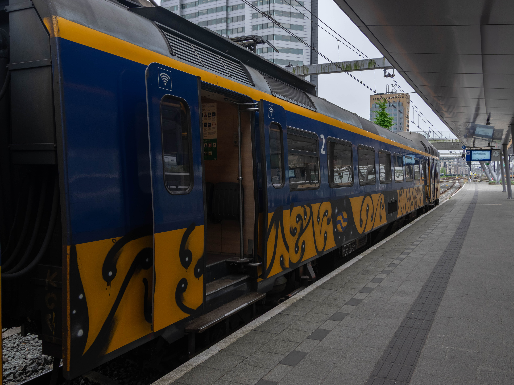

This is a page where I will be documenting random thoughts. Thoughts, new year's resolutions, whatever.
This year, a lot of things happened. Positive, as well as negative. Let's have a look!
I got into trainspotting. While I always liked trains, I now decided it would be a good moment to take photos of
them.
My first spot was on August 17th, I think. It was a picture of ICMm 4080 sporting some graffiti art that I
really liked. Not just a tag, but actually a nice artwork that respected the livery of the train really well.

I also started keeping track of all the trains I rode. At the time of writing, I have done 6396km in 3 days and
55
minutes, with a total delay of 2 hours and 37 minutes. ICM was on top, with 23 rides and 1565km.
I had the most rides on R-Net FLIRT-TAG number 2015 (4 times), made the most distance in NS ICNG 3146 (with
208km), and I
travelled the most on 8 December, with 551km.
In the community of public transport workers and fans, I made several new friends (yes, Krist, you are one of
them).
I've even done spotting and just travelling for fun with a few people and I really enjoyed doing that.
Sadly, I still do not enjoy my education (computer programming) in any way, but I intend to find something I like some time in the new year. I have to redo year 2, and sadly I keep getting blamed for using AI while I don't (I'm writing this text right here, would you think I'm too lazy to write functional and clean code?). It's very demotivating, but I try to pull through.
I fell in love for the first time. I didn't know it was possible. Sadly, it didn't go the way I had hoped.
I fell in love for the second time. We got into a relationship, and then I got dumped, three months later.
Eventually, I found out what a huge bullet I had dodged. But the people I got back in return are all worth
it.
My mental health is still not where it should be, but I'm slowly crawling back up again.
Sadly coming out as trans to my parents made it worse, but thankfully, there are other people who do accept me
for who I am.
Sooo, this year had its ups and downs. What am I going to do next year?
These lists tend to be forgotten, and I have to be realistic. I should work on one thing at a time. If I "fail" on one or more, I shouldn't let that drag me down. Let's take baby steps towards happiness.
Finally, I would like to wish everyone a very merry Christmas and a wonderful new year!
In my experience, it's easier to get into something romantic, than to keep the person with whom you have this "something romantic". What do I mean by something? I mean something like a date, just little moments of romance, or even a relationship. I want to brainstorm about this. Why is it so difficult to hold on to a person, but so easy to get cosy?
Maybe, one of the two wants to move too fast, for example, from cuddling, immediately to "adult fun time". It's happened, but I like to take things slow, which I am very clear about. Let's start with getting to know each other, building a friendship. Then, we can maybe cuddle and hold hands. Have some fun dates where we get to know each other even better. Move on to kissing or whatever. I'm asexual, so that's probably where that pipeline ends, but I know some people find *that* important in a relationship. That might deter some people. Others might not mind so much.
On the other hand, you have to be there for someone. You shouldn't force yourself to be there either. If you really like someone, this will all come by itself. It shouldn't cost you much effort, if any at all. If your darlingest darling is going through hell in one way or the other, they will want to process it with you. You have to prepare for this situation. And you have to consider if you want that very demanding role for this specific person. If you're not up to this task, let them know before they trust you and need you for this. Ghosting is not the solution, that'll only make things much worse. Been there too...
Another difficult thing is communication. Without communication, we are nowhere. We want to know what's acceptable, and what isn't. Yes, this can turn into fights, but as long as you communicate clearly, all will be okay. These fights don't have to be aggressive or anything. They can even be about who pays for dinner, which looks something like this:
A: I'll pay for dinner.
B: No, I'm gonna pay for dinner.
A: But it's my obligation to care for you!
B: But you do that often enough, let me pay for once.
A: okay fiiine, you win.
A: I love you so much.
B: I love you too sweetie.
And that would be that. B pays and A will pay another time.
Sooo... What if we take someone who is funny and kind (which is something we all want, right?), and add these
things?
We would end up with
Krist
someone who is funny, kind, respects boundaries, wants to be there for you no matter what and communicates
well.
Obviously, there are many more things, some may be more important to you. But this is what I think is most
important to me.
Wait, why did I type "Krist" there? Oh, right, because that's the person who ticks all my boxes. He
treats me how he wants me to treat him, and so do I.
Through all the drama, while other people went away because they seemingly couldn't handle me, he stayed, he
supported me.
Even though I was a proper cunt in the beginning, which I deeply and deeply regret in retrospect, he actually
stayed.
And isn't that what love and romance is all about?